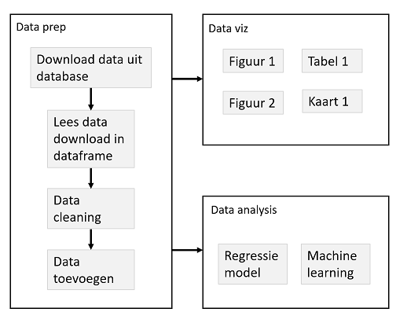

- Gebruik van functies voor een betere workflow
- Motivatie
- Wrapper functies voor plots
- Caching / drake
- Functies: extra tips & tricks
11 Juni 2020
R & Rstudio Advanced
“Dag” 2 - Deel 3
Project workflow
Een goed project:
- Kan snel begrepen worden door anderen
- Kan makkelijk aangepast worden (config)
- Kan makkelijk uitgebreid worden
- Onderdelen van het project kunnen hergebruikt worden (modulair)
Functies zijn hier nuttig:
- Begrijpen van complexe code
- Duidelijk maken van inputs (argumenten) en outputs (
return()) - Functies helpen om complexe projecten modulair te maken
Logische folder structuur
Er zijn veel mogelijkheden om de verschillende bestanden in een project te verdelen in een logische folder structuur.
Dit is belangrijk:
- Houd code, data, en output altijd gescheiden
Een minimaal voorbeeld:

Er is hier 1 hoofd script, “analysis.R”, waarin alle analyses worden uitgevoerd. Verder is alles ondergebracht in sub-folders.
Project structuur
Organiseer de logica van de verschillende stappen, sub-stappen (sub-sub-stappen) voor een project.
Voorbeeld 1
park <- arrange(parking_raw, updated) %>%
filter(!label %in% c("P+R","P4") ) %>%
mutate(label = as.factor(label),
updated = as.POSIXct(updated, tz = "UTC"),
week_time = (wday(updated) - 1) * 24*60 +
60*(hour(updated)) + minute(updated),
week_time_15 = floor(week_time / 15),
Date = as.Date(updated))
Voorbeeld 1
# R/functions_clean_data.R
clean_parking_data <- function(data){
data %>%
arrange(updated) %>%
filter(!label %in% c("P+R","P4") ) %>%
mutate(label = as.factor(label),
updated = as.POSIXct(updated, tz = "UTC"),
week_time = (wday(updated) - 1) * 24*60 +
60*(hour(updated)) + minute(updated),
week_time_15 = floor(week_time / 15),
Date = as.Date(updated))
}
# main.R
park <- clean_parking_data(parking_raw)
Voorbeeld 2
parking_hr <- group_by(park, Date, label, hour) %>%
summarize(parked = mean(parked)) %>%
ungroup %>%
mutate(weekday = wday(Date, abbr=FALSE, label = TRUE),
weekday = as.integer(factor(weekday, ordered = FALSE)))
model1 <- ranger(parked ~ hour + label + weekday, data = parking_hr, importance = "impurity")
out_dfr <- expand.grid(hour = hour_now,
weekday = wday(Sys.time()),
label = factor(c("P1","P10","P11","P12",
"P2","P3","P5","P6","P7","P8","P9")))
predict(model, data = out_dfr)
Voorbeeld 2
# Maak uurlijkse data parking_hr <- aggregate_parking_data(park) # Fit model, met weekdag model1 <- fit_randomforest_model(parking_hr, form = 1) # Voorspellingen predict_randomforest_model(model1)
Reproducibility: langzame stappen
Een goed project kan in 1 stap opnieuw uitgevoerd worden (bv.
source("main.R"))Alle outputs kunnen opnieuw gemaakt worden op basis van de code
Langzame stappen: liever maken we deze niet opnieuw wanneer dit niet nodig is
# Super simpel systeem
cache <- "cache/slowstep.rds"
if(!file.exists(cache)){
result <- make_slow_result()
} else {
result <- readRDS(cache)
}
Reproducibility: langzame stappen
- Beter: gebruik van een workflow manager systeem
- Straks: de
drakepackage
Functie types: generiek vs. project functies
Generieke functies weten niets van je specifieke project, en kunnen overal worden gebruikt
Gebruik van namespace directive (
dplyr::filter), enrequirevoor laden van packages is aan te raden.Project functies zijn specifiek voor dit project
Om tijd te besparen kun je minder strict zijn in aanroepen packages, en alle packages simpelweg laden in
R/load_packages.R
Tot slot
We kunnen functies gebruiken om onze lange code in logische brokken te verdelen
Deze brokken hebben duidelijke inputs en outputs waardoor de samenhang van het project duidelijk wordt
Dit maakt een zeer leesbaar ‘hoofd’ script mogelijk
Houd je functies klein: een functie voert 1 operatie uit, met evt. opties.
Het vinden van de juiste functies is niet makkelijk, er zijn meerdere mogelijkheden!